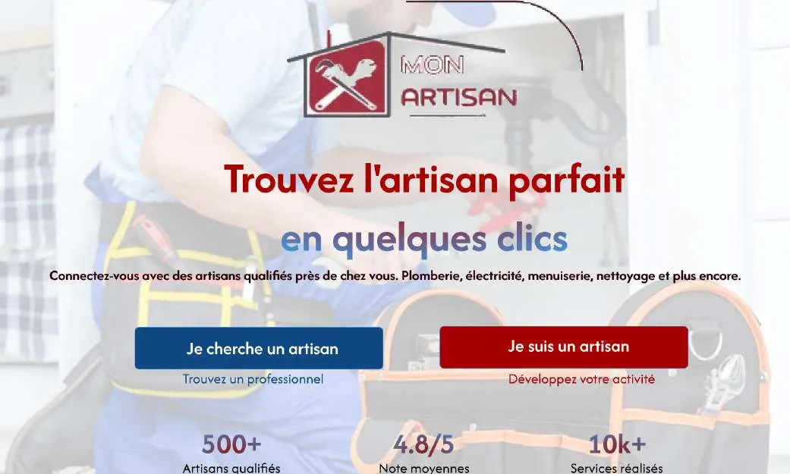
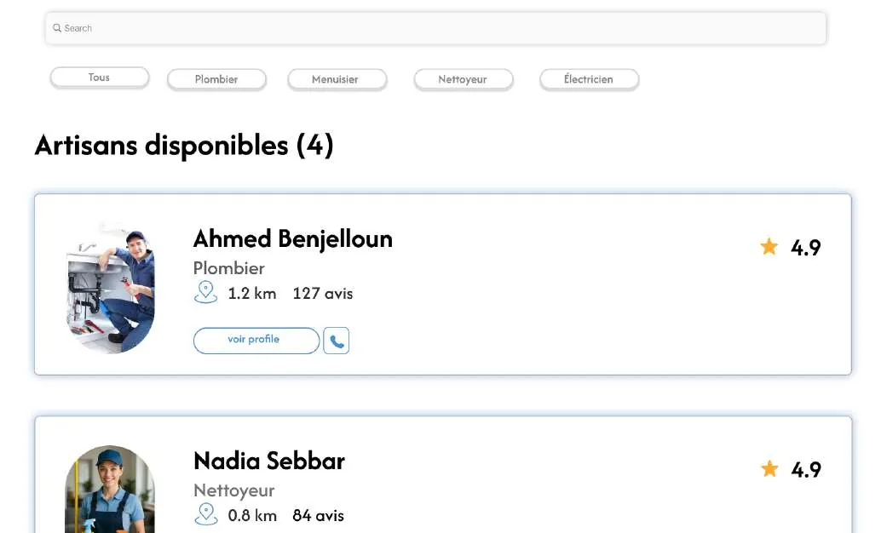
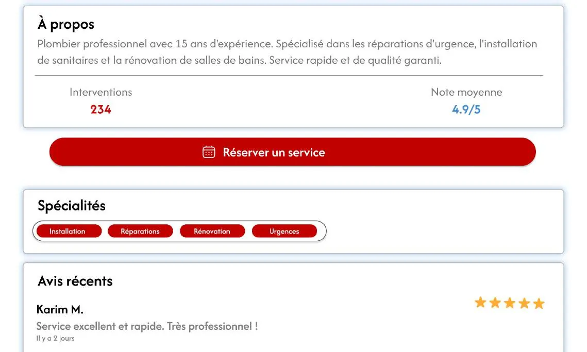
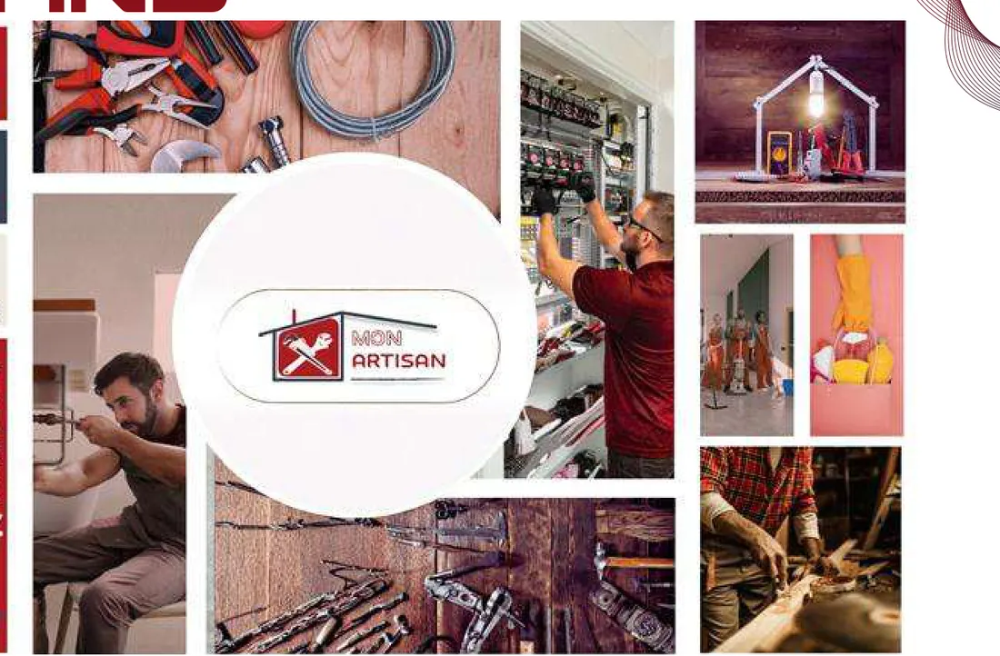
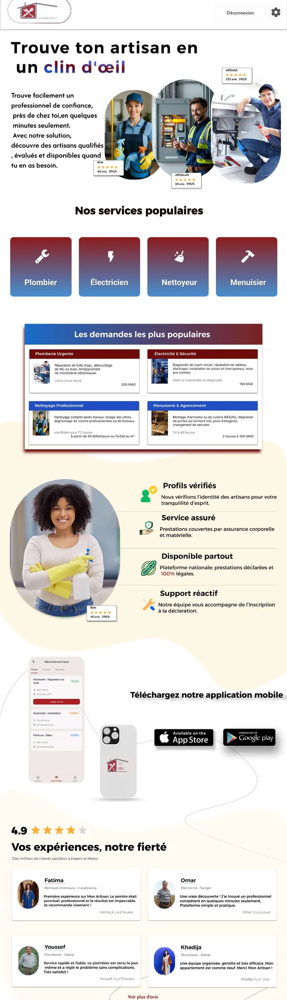
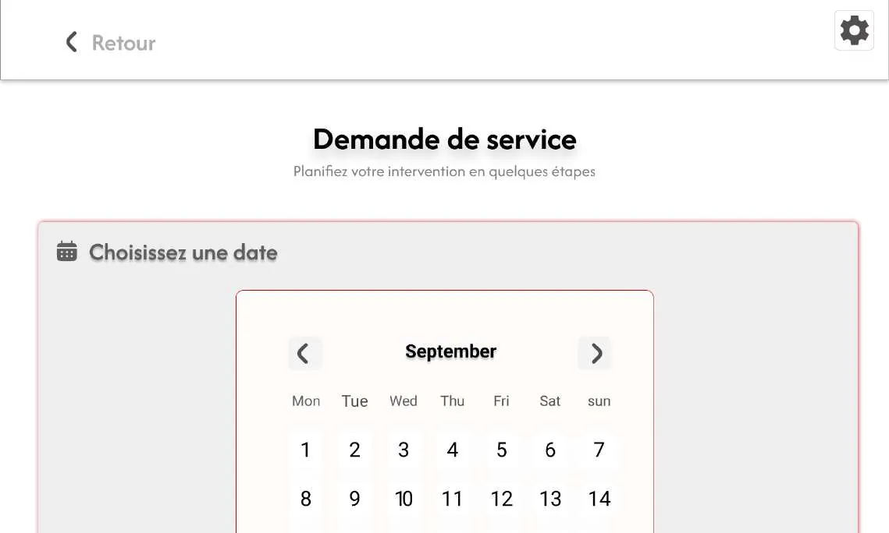
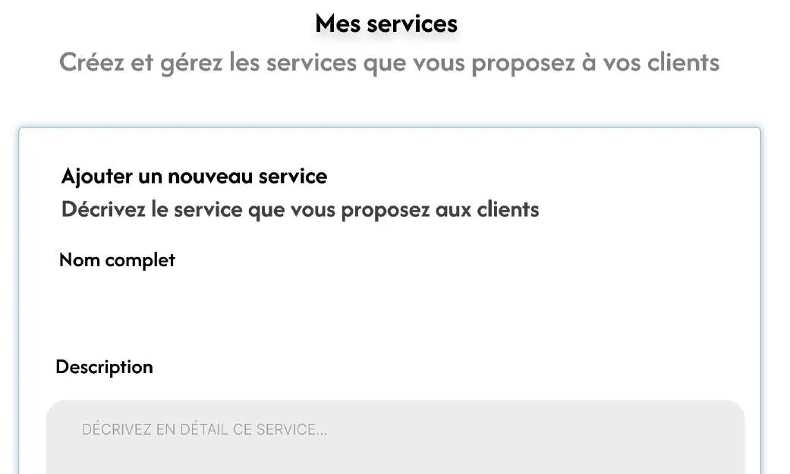
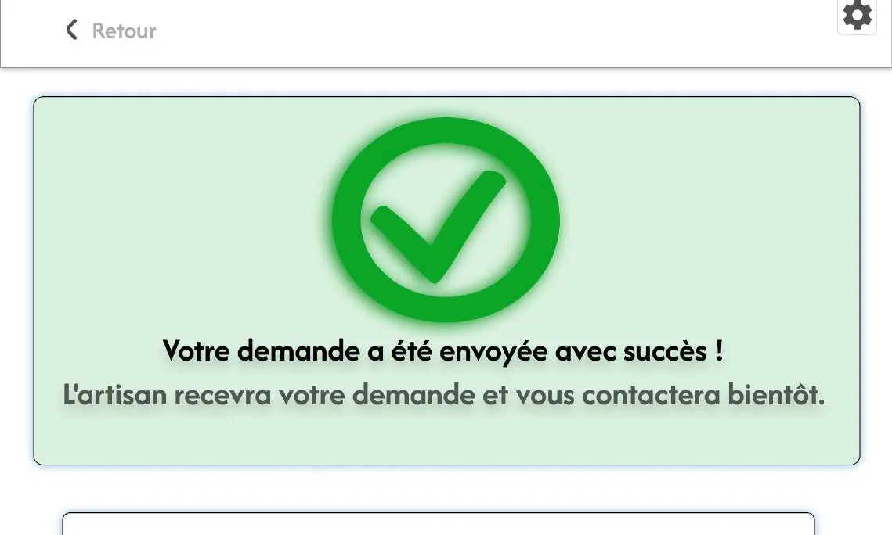

Une plateforme qui connecte les particuliers à des artisans qualifiés — plombiers, électriciens, nettoyeurs, menuisiers — pour des interventions rapides et de confiance.
Recherche par métier et par localisation
Profils vérifiés, avis et notes
Réservation d'un créneau en ligne
Contact direct : chat ou appel
Espace artisan : publier ses services
Notifications de nouvelles demandes
monartisan.ma



→Réserver un service
★4,9 / 5Ahmed Benjelloun · Plombier
◎1,2 km · 127 avisArtisan le plus proche
7Semaines de projet
2Personas · client & artisan
4Concurrents analysés
7Écrans conçus
1Prototype cliquable
01 — Le brief
Le point de départ
Trouver un artisan disponible et fiable passe encore par Google, les Pages Jaunes ou le bouche-à-oreille. Le brief : concevoir une plateforme qui rende cette recherche rapide, lisible et rassurante — pour le client comme pour l'artisan.
01
Contexte
Public visé : particuliers de 25 à 60 ans, en milieu urbain, avec un besoin ponctuel de dépannage ou de petits travaux. Aujourd'hui ils cherchent sur Google, par bouche-à-oreille, ou sur des plateformes généralistes.
02
Objectif
Une plateforme fiable et intuitive pour trouver, contacter et réserver un artisan facilement — et, côté artisan, gagner en visibilité sans dépendre du bouche-à-oreille.
03
Ce que couvre l'étude
Benchmark, questionnaire, personas et empathy maps, parcours utilisateur, architecture, user flow, sketchs, wireframes, maquettes haute fidélité et prototype.
02 — Rôle
Mes responsabilités
Projet mené de bout en bout, du brief au prototype cliquable.
01
Recherche & benchmark
Analyse de quatre plateformes concurrentes, questionnaire utilisateur, synthèse des habitudes et des attentes.
02
Conception UX
Deux personas et leurs empathy maps, storyboard, moodboard, parcours utilisateur pour chaque profil.
03
Architecture & navigation
Structure initiale puis finale (sitemap), user flow par fonctionnalité, sketchs papier puis wireframes sur Figma.
04
UI & prototype
Design system — typographies, couleurs, icônes —, maquettes haute fidélité et prototype cliquable.
03 — Planning
Sept semaines, sept livrables
Du 15 septembre au 2 novembre. Chaque semaine se termine par un livrable qui conditionne la suivante.
S115–21 septS222–28 septS329 sept–5 octS46–12 octS513–19 octS620–26 octS728 oct–2 nov
Découverte & objectifs
Idéation & recherche
Conception UX
Architecture & navigation
Sketchs & wireframes
Design system
Maquettes & prototype
S1
Lecture du brief
Utilisateurs et besoins
Fonctionnalités clés
Périmètre technique
Benchmark
S2
Forces / faiblesses
Questionnaire
Analyse des retours
Personas
Empathy maps
S3
Storyboard
Moodboard
Parcours utilisateur
Sitemap
User flow
S4
Sketchs des écrans
Ajustements
Préparation wireframes
Wireframes Figma
S5
Cohérence & navigation
Feedback
Maquettes haute fidélité
S6
Dossier UX/UI
Design system
Typos, couleurs, icônes
S7
Prototypage
Tests utilisateurs
Clôture du projet
04 — Recherche
Ce que font déjà les autres
Quatre plateformes analysées, au Maroc et à l'international. Chaque faiblesse observée est devenue une opportunité de positionnement.
Plateforme
Points forts
Points faibles
Opportunité pour Mon Artisan
HomeServe
Interface moderne et intuitive, intervention sous 2 h, couverture nationale
Service très orienté dépannage, peu de personnalisation visuelle
Créer une ambiance plus chaleureuse et incarnée
MesTravaux
Large choix de métiers, mise en relation directe
Peu d'identité visuelle, pas d'application mobile dédiée
Prévoir une app mobile à navigation fluide
Cherche-Chantier
Réception de devis sans publier d'annonce, artisans qualifiés
Axé sur les gros travaux, peu adapté aux petits besoins quotidiens
Se positionner sur les petits services du quotidien
Khedamni (Maroc)
Interface en arabe, catégories claires, présence locale
Design classique, peu d'éléments visuels attractifs
Police d'origine du projet : Intro Rust (display). Ce poster utilise Archivo Black comme équivalent libre, pour rester reproductible.
Titre 44 · BlackTrouvez l'artisan parfait
Section 21 · 700Artisans disponibles
Corps 15 · 400Profils vérifiés, avis et réservation en ligne.
Étiquette 12 · 7001,2 km · 127 avis
Composants récurrents
Bouton plein rougeBouton contour navyCarte artisanFiltre métierNotation étoilesBadge spécialitéCalendrier de créneauxChamp de rechercheÉtat de confirmation
Moodboard

09 — Maquettes
Les écrans
Sept écrans haute fidélité, côté client et côté artisan.
AccueilUne promesse, deux portes d'entrée.Décision : « Je cherche un artisan » et « Je suis un artisan » côte à côte — les deux publics sont adressés dès le premier écran.

Services & réassuranceMétiers populaires, profils vérifiés, avis clients.Décision : la réassurance (profils vérifiés, service assuré, support) arrive avant les avis — c'est le doute nº1 relevé en recherche.
RechercheFiltres par métier, artisans disponibles listés avec distance et note.Décision : distance, nombre d'avis et note sur la même ligne — les trois critères de choix, sans clic supplémentaire.
Profil artisanÀ propos, interventions, note moyenne, spécialités, avis récents.Décision : « Réserver un service » est le seul bouton plein ; les spécialités sont des badges, pas un paragraphe.

Demande de serviceChoix de la date dans un calendrier, puis détail de l'intervention.Décision : la date d'abord — c'est la question qui décide de tout le reste.

Espace artisan — mes servicesCréer et gérer les services proposés aux clients.Décision : côté artisan, l'écran d'accueil est un formulaire d'ajout, pas un tableau de bord — publier vite est l'objectif nº1.
09b — Parcours clé
Réserver, en quatre écrans
Du besoin exprimé à la confirmation : le parcours que le prototype devait valider.
01Chercher
Filtrer par métier, comparer distance, note et nombre d'avis.
02Vérifier
Lire les spécialités, le nombre d'interventions et les avis récents.
03Demander
Choisir une date, décrire l'intervention en quelques étapes.
04

Confirmer
Confirmation immédiate, et l'artisan reçoit la demande.
1,3×
Le détail qui porte la décision : sur chaque carte artisan, le métier, la distance, le nombre d'avis et la note tiennent sur une seule ligne — c'est ce bloc qui permet de choisir sans ouvrir cinq profils. « Voir profil » et l'appel direct restent en secondaire.
10 — Décisions
Besoin → réponse de design
#Ce que disent les utilisateursCe que fait le produit
01« J'ai déjà eu de mauvaises expériences. »Profils vérifiés, note moyenne et avis récents affichés avant tout contact.
02« Je ne sais pas qui est disponible. »Liste des artisans disponibles, avec distance et créneaux réservables en ligne.
03« Je n'ai pas le temps de comparer. »Métier, distance, avis et note sur une seule ligne de carte.
04« Je perds du temps au téléphone. »Demande de service datée en ligne, confirmation immédiate, appel gardé en secondaire.
05Artisan : « Je manque de visibilité. »Espace dédié pour publier profil et services, et notification à chaque demande.
11 — Mesure
Comment on saura que ça marche
Le produit n'a pas encore été mis en ligne : ces quatre indicateurs sont le plan de mesure prévu, pas des résultats. Les chiffres visibles dans les maquettes sont du contenu d'exemple.
Demandes envoyées par visite
Le parcours mène-t-il vraiment jusqu'à la réservation ?
À mesurer
Abandons sur la page de recherche
Les filtres suffisent-ils à faire un choix ?
À mesurer
Délai de réponse des artisans
La notification déclenche-t-elle une action ?
À mesurer
Profils artisans complétés
L'espace artisan est-il assez simple pour être rempli ?